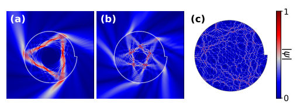

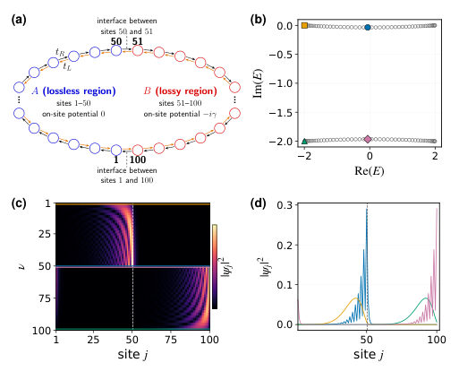
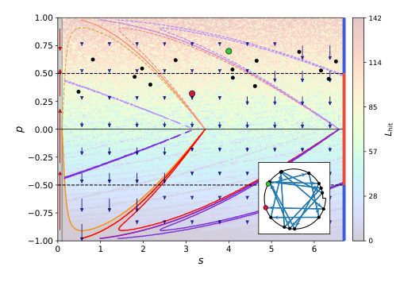
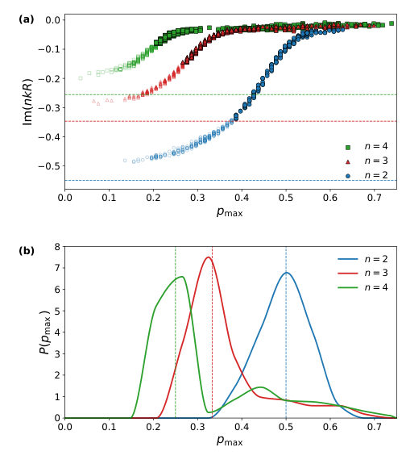
← Index · ← Previous · Next →
Authors: Amit Samanta, Mohammad Abrarul Hasanat, Jason Ludmir, Ryan Stutsman, Tirthak Patel, Rohan Basu Roy
Type: both · Category: quantum information and computing · PDF: https://arxiv.org/pdf/2608.28811v1
Analysis basis: full PDF text, analyzed in chunks
Topic relevance: 🔥 QC/QI experiment 4/5 · quantum measurements 2/5
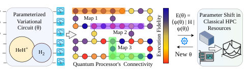
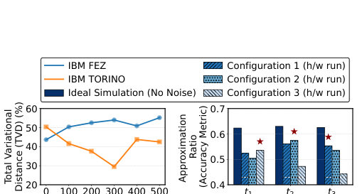
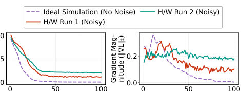
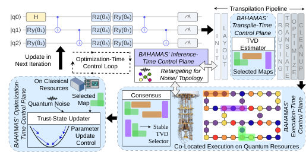
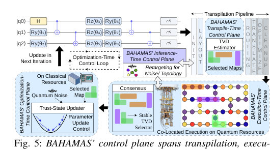
Summary. This paper introduces BAHAMAS, an online control plane designed to stabilize Variational Quantum Algorithms (VQAs) running on noisy quantum hardware. It solves the problem of optimization instability caused by time-varying noise and fixed qubit mappings by adaptively selecting the best physical qubit mapping at every iteration. This results in more reliable and robust quantum computation performance on real devices.
Why it may be interesting. It provides a practical, hardware-aware control layer for VQAs, directly addressing the critical challenge of noise-induced instability in near-term quantum computation, which is highly relevant to experimental quantum information science.
Main problem. Variational Quantum Algorithms (VQAs) suffer from unstable optimization because hardware noise and static qubit mappings distort gradient signals across optimization iterations.
Main result. The proposed framework, BAHAMAS, significantly improves VQA optimization reliability by adaptively controlling noise exposure and maintaining consistent performance across different hardware runs and drift conditions.
Method. BAHAMAS is an online control plane that stabilizes noise by adaptively selecting physical qubit mappings using consensus-based fidelity estimation, without needing simulators or offline training.
Model / system. The work operates on hybrid classical-quantum systems using VQAs on real quantum processors (e.g., IBM quantum processors) that exhibit time-varying noise and qubit drift.
Key observables. Total Variation Distance (TVD), normalized loss, and gradient magnitude are key diagnostics used to measure noise stability and optimization progress.
Important parameters / regimes. The optimization parameters ($ heta$) of the parameterized quantum circuit (ansatz) are the primary variables being optimized.
Assumptions / limitations. The core assumption addressed is that optimization quality depends on consistent noise exposure across iterations, not just low noise at any single point.
Figures summary. Figures illustrate the optimization loop, showing how TVD fluctuates due to drift, how the best circuit mapping changes over time, and comparing ideal simulation convergence versus noisy hardware plateaus.
Paper structure. The paper introduces the problem of VQA instability due to noise, details the BAHAMAS control plane components (stable TVD selector, trust-state updater), presents results showing performance gains, and concludes by discussing the framework's robustness.
Variational quantum algorithms (VQAs) suffer from unstable optimization due to temporal noise drift and static qubit mappings that distort gradient signals across iterations. We present BAHAMAS, an online control framework that stabilizes noise exposure by adaptively selecting physical mappings via consensus-based fidelity estimation, without requiring simulators, offline training, or prior executions. Across real quantum devices, BAHAMAS improves optimization reliability and supports inference-time retargeting under drift through robust, per-iteration control.
Authors: Giuseppe La Capra, Fabio Calabrese, Giorgio D'Amico, Christian Conti, Andrea De Simone, Deborah Volpe, Roldolfo Carobene, Claudio Gatti, Andrea Giachero, Fabrizio Riente
Type: both · Category: quantum information and computing · PDF: https://arxiv.org/pdf/2608.29399v1
Analysis basis: full PDF text, analyzed in chunks
Topic relevance: 🔥 QC/QI experiment 4/5 · quantum measurements 2/5
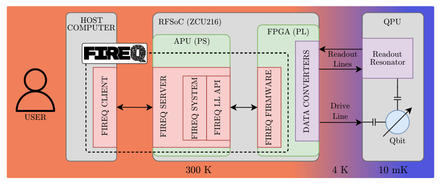
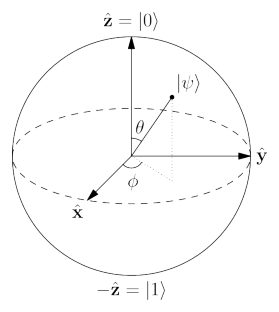
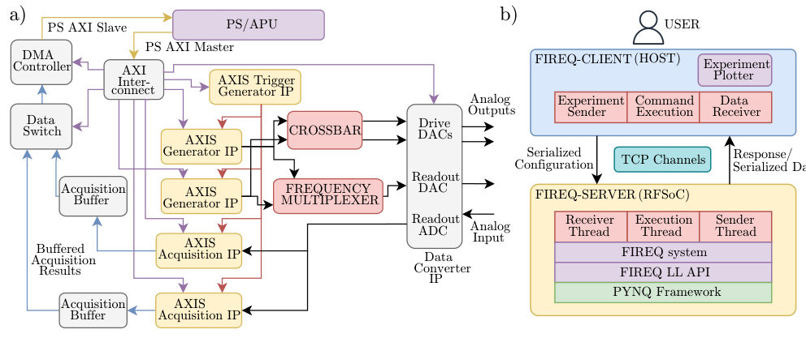
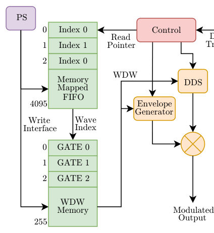
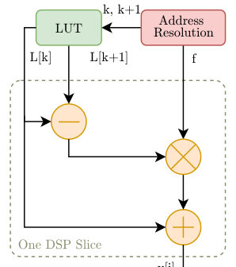
Summary. This paper presents FIREQ, an open-source, FPGA-based framework designed to overcome the scaling limitations of classical control electronics for superconducting qubits. By integrating all control and readout functions onto an RFSoC, it achieves high performance metrics, validating its use as a robust, modular platform for quantum experiments.
Why it may be interesting. This work provides a concrete, high-performance hardware platform for quantum control, which is crucial for experimentalists developing and testing new quantum algorithms or characterizing novel qubit modalities.
Main problem. The classical infrastructure required to control and measure superconducting qubits becomes a significant bottleneck as qubit counts scale.
Main result. The FIREQ framework successfully demonstrated end-to-end operation on a superconducting qubit, achieving T1 = 6.94 us and T2* = 13.50 us while maintaining low timing skew.
Method. The authors developed an open-source, RFSoC-based hardware/software co-design framework that integrates RF synthesis, pulse generation, and readout directly onto an FPGA.
Model / system. The system targets superconducting qubits, whose quantum state is modeled on the Bloch sphere and controlled via microwave pulses inducing rotations. The platform uses an AMD Zynq UltraScale+ RFSoC for high-speed, deterministic control.
Key observables. Qubit coherence times ($T_1, T_2^*$), RF output phase noise, timing skew, and gate fidelity.
Important parameters / regimes. RF pulse generation up to 9.3 GHz with 107 ps resolution; $T_1 = 6.94 \mu ext{s}$ and $T_2^* = 13.50 \mu ext{s}$.
Assumptions / limitations. The core assumption is that integrating control/readout functions onto an RFSoC significantly reduces latency and overhead compared to conventional external instrumentation.
Figures summary. Figures illustrate the system overview across cryogenic stages, the Bloch sphere representation of the qubit state, and detailed results from qubit characterization experiments (e.g., Rabi oscillations, $T_1$ measurements).
Paper structure. The paper introduces the hardware challenge, details the FIREQ architecture (firmware/software stack), validates the system performance metrics (timing skew, RF characterization), and concludes with experimental results on qubit spectroscopy and coherence measurements.
We present FIREQ (FPGA Instrumentation for Readout and Qubit control), an open-source RFSoC-based framework for the control and readout of superconducting qubits. FIREQ combines a modular AXI-compliant firmware architecture with a PYNQ-based software stack designed to support extensible hardware integration, deterministic experiment timing, and low-overhead execution of repeated calibration and characterization workflows. The firmware implements direct RF synthesis and acquisition, trigger-based sequencing, programmable pulse generation, frequency-multiplexed readout, and memory-efficient acquisition and waveform buffering. The software adopts a client-server architecture with streamed data transfer and dependency-aware configuration updates to reduce host-device and reconfiguration overhead during parameter sweeps. On an AMD Zynq UltraScale+ RFSoC ZCU216, FIREQ generates RF pulses up to 9.3 GHz with a pulse-duration resolution of 107 ps and an event-timing resolution of 1.7 ns. FPGA resource utilization is compared with representative open-source RFSoC control frameworks, showing a low BRAM footprint while retaining full-rate I/Q generation and acquisition. The RF output is characterized in terms of phase noise, noise spectral density, and inter-channel timing skew. End-to-end operation is validated on a superconducting qubit through resonator spectroscopy, Rabi, Ramsey, and relaxation measurements, yielding T1 = 6.94 us and T2* = 13.50 us. FIREQ can therefore be used both as a qubit-control platform and as an experimental environment for evaluating alternative control and readout IP architectures.
Authors: Gaspard Beugnot, Paul Gregory, Rémi Robin, Antoine Tilloy
Type: theory · Category: numerical methods · PDF: https://arxiv.org/pdf/2608.30860v1
Analysis basis: full PDF text, analyzed in chunks
Topic relevance: 🔥 methods for driven-dissipative 4/5 · correlated / nonlocal dissipation 1/5 · driven-dissipative phase transition 1/5
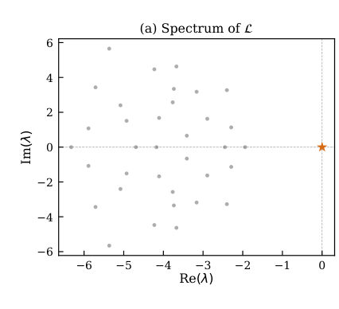
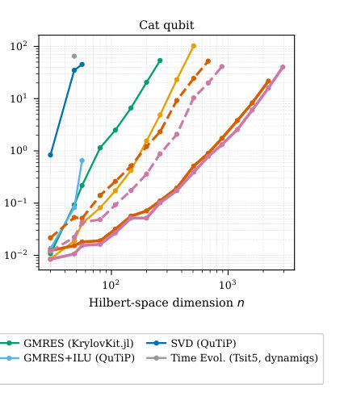
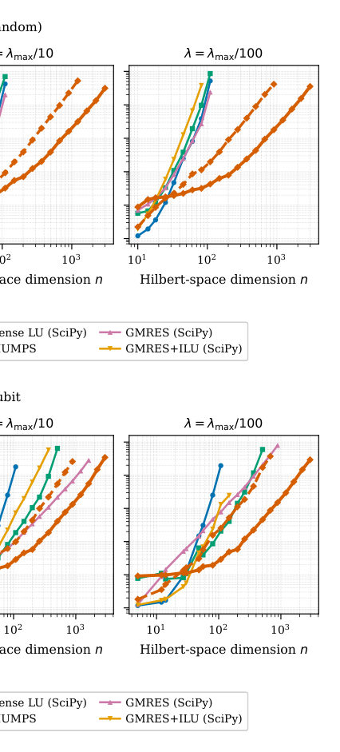
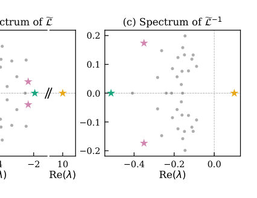
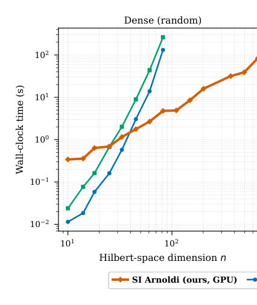
Summary. This paper tackles the computational challenge of simulating large open quantum systems governed by the Lindblad Master Equation. It introduces a novel numerical approach by decomposing the Liouvillian operator and constructing an auxiliary map $\Phi$ whose fixed point yields the steady state. By leveraging the efficient invertibility of the no-jump evolution part, the authors achieve state-of-the-art, scalable iterative solvers for finding steady states and low-lying spectra.
Why it may be interesting. This work provides state-of-the-art numerical techniques for simulating complex open quantum dynamics, moving beyond the prohibitive $O(n^6)$ scaling of direct methods to an efficient $O(n^3)$ scaling per iteration.
Main problem. Developing efficient, well-conditioned iterative methods to solve for the steady state, low-lying spectrum, and time evolution of large open quantum systems.
Main result. The authors propose using an auxiliary CPTP map $\Phi$ derived from the no-jump evolution part of the Lindbladian, allowing the steady state to be found efficiently via Arnoldi iterations.
Method. The core method involves decomposing the Lindblad operator $\mathcal{L} = S + K$ and utilizing the efficient inversion of the no-jump part $S$ to construct a suitable iterative map $\Phi$. This map is then used with Krylov subspace methods (Arnoldi/GMRES) for convergence.
Model / system. The system is modeled by Markovian open quantum systems governed by the Lindblad Master Equation ($\dot{ ho}_t = \mathcal{L} ho_t$). The analysis focuses on the superoperator $\mathcal{L}$ acting on the density matrix $ ho_t$.
Key observables. Steady state $ ho_\infty$, low-lying excited states (eigenvectors/eigenvalues of $\mathcal{L}$), and time evolution $ ho(t)$.
Important parameters / regimes. System dimension $n$ (large, $n \ge 10^3$), time step $\Delta t$, and the spectral gap of $\mathcal{L}$.
Assumptions / limitations. The primary assumption is that the no-jump part $S$ is invertible, which allows the construction of the auxiliary map $\Phi$. The methods are benchmarked assuming a unique steady state exists.
Figures summary. Figures compare spectra of $\mathcal{L}$ and the auxiliary map $\Phi$, showing the latter has eigenvalues confined within the unit circle, which is ideal for iterative solvers.
Paper structure. The paper first establishes the computational bottleneck of the Lindblad equation ($\mathcal{L}$), then introduces the decomposition $\mathcal{L} = S + K$. It then details the use of the inverse map $S^{-1}$ to define $\Phi$, showing how $ ho_\infty$ relates to the fixed point of $\Phi$, and finally applies this framework to compute the spectrum and time evolution using specialized Krylov solvers.
Markovian open quantum systems are well modeled by the Lindblad Master Equation (ME) $\frac{\mathrm{d}}{\mathrm{d} t} ρ_t = \mathcal{L} ρ_t$, where $\mathcal{L}$ is a linear (super-)operator and $ρ_t$ is the system state, a positive matrix. When designing or characterizing a quantum system, one is usually interested in the steady state $ρ_\infty$ (such that $\mathcal{L} ρ_\infty = 0$), the first few excited states, and trajectories $t\mapsto ρ_t$. In finite dimension, $ρ_t$ is an $n\times n$ matrix, $\mathcal{L}$ thus typically costs $n^4$ to store explicitly as a dense matrix, and $O(n^6)$ to diagonalize or invert exactly, making standard linear algebraic techniques expensive for large systems. However, $\mathcal{L}$ usually costs only $O(n^3)$ to apply. This makes iterative methods appealing, but they do not work without a good preconditioner. In this article, our main observation is that a part of the Lindblad equation, corresponding to the so-called no-jump evolution $\mathcal{S}$, can be inverted efficiently. Using this inverse map, we introduce an auxiliary completely positive trace-preserving (CPTP) map $Φ$ whose fixed point is directly related to $ρ_\infty$, all the other eigenvalues having smaller magnitude. The map $Φ$ is thus well suited to iterative methods, and $ρ_\infty$ can be found in a few Arnoldi iterations. Using the same inverse map $\mathcal{S}^{-1}$ as preconditioner, we compute the low-lying spectrum efficiently via shift-invert Arnoldi, and, as a proof of concept, build an implicit time integrator that is competitive on stiff systems in the low-precision regime. For the steady-state and low excited states problems, our methods scale like $O(n^3)$ per iteration and offer state-of-the-art performance on CPU and GPU.
Authors: Duc-Kha Vu, Minh Tam Nguyen, Şahin K. Özdemir, Özgür E. Müstecaplıoğlu, Fatih Ozaydin
Type: both · Category: quantum information and computing · PDF: https://arxiv.org/pdf/2608.30176v1
Analysis basis: full PDF text, analyzed in chunks
Topic relevance: 🔥 QC/QI experiment 4/5 · quantum measurements 1/5
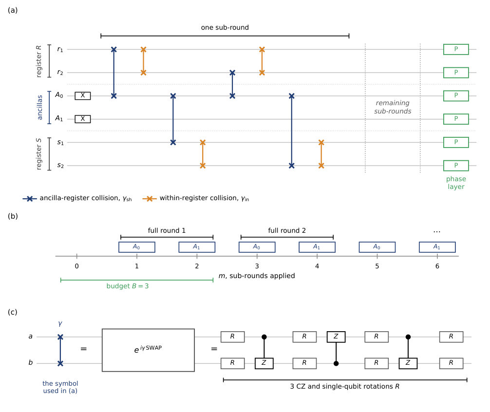
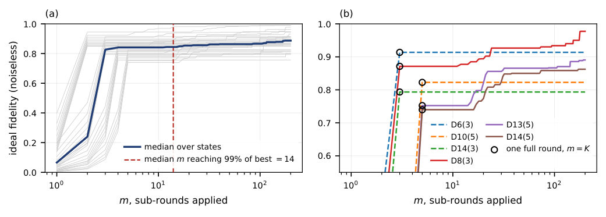
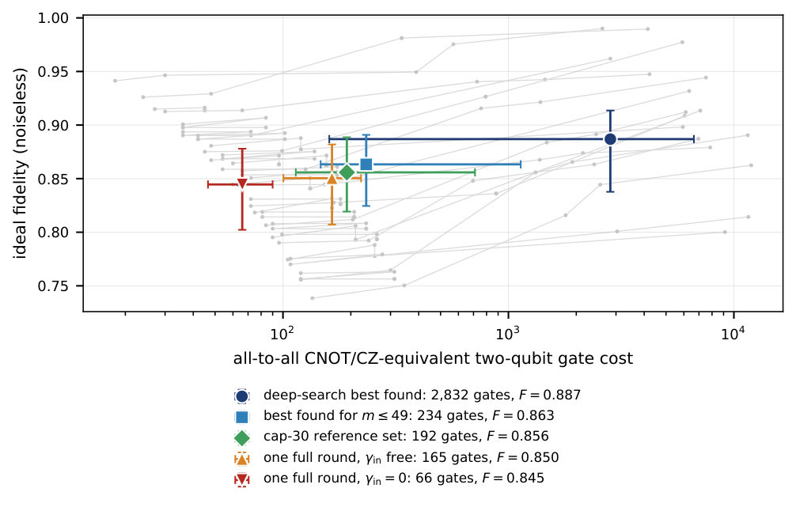
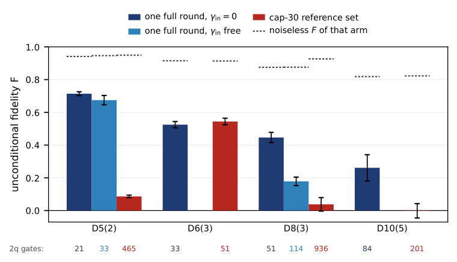
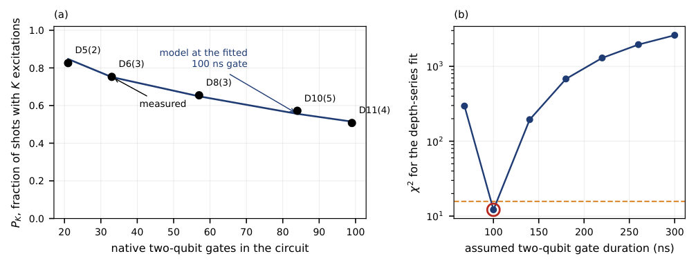
Summary. This work tackles the difficult problem of generating highly entangled Dicke states by presenting an open dataset and code for a collision-based quantum protocol. The resource includes noiseless theoretical frontiers, circuit cost estimates, and actual measurements on a superconducting processor. It is vital for benchmarking the trade-off between achievable state fidelity, required circuit depth, and hardware noise.
Why it may be interesting. It provides a crucial, reusable benchmark for quantifying the practical limitations of generating complex entangled states on near-term quantum hardware, directly addressing the fidelity-cost trade-off.
Main problem. The primary challenge is preparing multipartite entangled Dicke states with high fidelity, especially as the system size and excitation number increase.
Main result. The authors release a comprehensive dataset and code detailing the trade-off between state-preparation fidelity, circuit cost, and hardware noise across a full depth axis.
Method. They analyze a collision-based quantum protocol, providing data layers that cover noiseless theoretical limits, circuit resource estimates, and actual measurements on a superconducting processor.
Model / system. The system involves preparing Dicke states ($ ext{D}_K^N$) using a collision-based protocol mediated by a mobile shuttle ancilla. The implementation is benchmarked on a 54-qubit superconducting processor.
Key observables. Fidelity (noiseless vs. measured), circuit depth (sub-rounds $m$), and circuit cost (gate count, interactions).
Important parameters / regimes. System size (5 to 14 qubits), excitation number ($K$), and circuit depth ($m=0$ to $m=200$).
Assumptions / limitations. The hardware measurements are subject to superconducting processor noise and decoherence, and the comparison highlights that optimizing only noiseless fidelity can lead to unnecessarily deep circuits.
Figures summary. Not specified, but the analysis focuses on visualizing the trade-off between fidelity, cost, and depth across multiple states.
Paper structure. The paper introduces the problem, details the collision-based protocol, presents the open dataset (L1: Noiseless Frontier, L2: Circuit Cost, L3: Hardware), and discusses the implications of the full depth-dependent analysis.
Dicke states are multipartite entangled states in which a fixed number of quantum excitations is coherently shared among many qubits. Originally introduced in the context of cooperative emission and superradiance, they are now important resources for quantum sensing, networking, and collective quantum phenomena. Preparing prescribed Dicke states with high fidelity, however, remains challenging, particularly as the system size and excitation number increase. Here we present an open dataset and accompanying code for preparing Dicke states using a collision-based quantum protocol. The dataset covers systems from five to fourteen qubits over a broad range of excitation numbers and records how the best-found noiseless preparation fidelity changes with circuit depth. It also provides circuit-resource estimates and experimental measurements for selected states on the 54-qubit IQM Emerald superconducting processor. The accompanying code reproduces the processed data and validation checks, providing a reusable benchmark for studying the trade-off between state-preparation fidelity, circuit cost, and hardware noise.
Authors: Holly G. Stemp, Harry Hanlim Kang, Chih Hwan Yang, Gabriel D. Cutter, Frederike Brockmeyer, Patrick J. Strohbeen, Max Hays, Jeffrey A. Grover, William D. Oliver
Type: experiment · Category: quantum information and computing · PDF: https://arxiv.org/pdf/2608.31093v1
Analysis basis: full PDF text, analyzed in chunks
Topic relevance: 🔥 QC/QI experiment 4/5 · quantum measurements 1/5
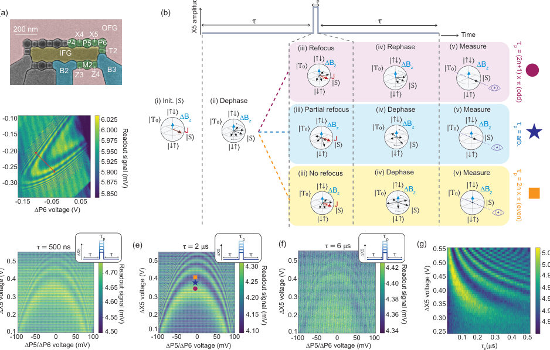
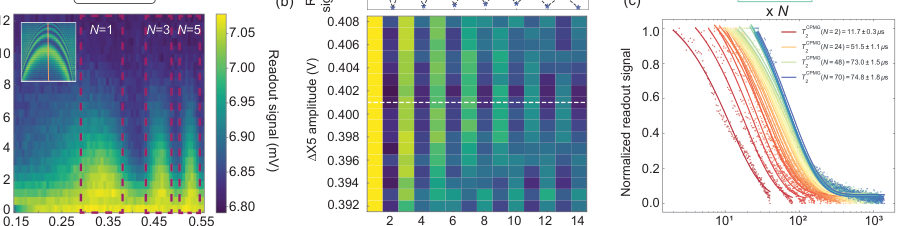
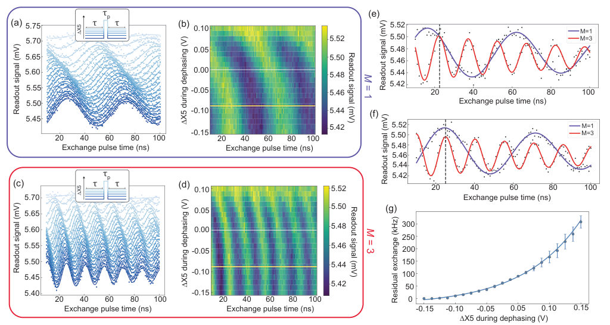
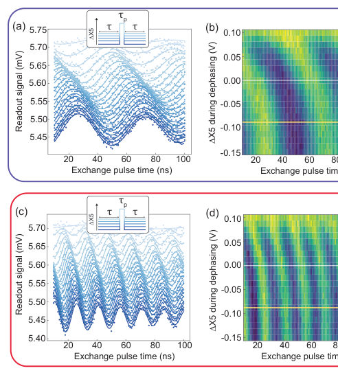
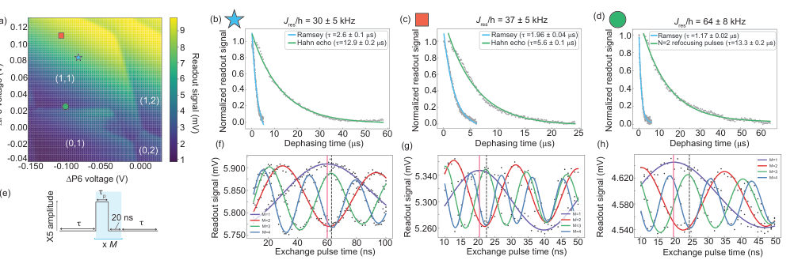
Summary. This paper presents a novel, field-free method to characterize spin qubits in Si/SiGe double quantum dots by exploiting the intrinsic magnetic field gradient from nuclear spins. By implementing CPMG exchange sequences, the researchers significantly extend coherence times and accurately map the residual exchange coupling. This establishes a simple, highly relevant diagnostic technique for next-generation solid-state quantum computing devices.
Why it may be interesting. This work provides a robust, practical diagnostic tool for solid-state qubits, directly addressing the challenge of operating in environments (like superconducting circuits) where external magnetic fields are detrimental, which is highly relevant to quantum computing hardware development.
Main problem. The primary goal was to develop a simple, zero-applied-field diagnostic method to characterize exchange-coupled spin pairs in semiconductor qubits, especially for hybrid systems sensitive to external magnetic fields.
Main result. The authors successfully demonstrated that intrinsic magnetic-field gradients from residual nuclear spins can be used to implement exchange oscillations, extending coherence times significantly and providing a simple, high-throughput characterization tool.
Method. The characterization relies on applying Carr-Purcell-Meiboom-Gill (CPMG) exchange sequences to measure the decay and oscillation phase of the singlet state coherence.
Model / system. The system is based on Si/SiGe double quantum dots (DQD) used as semiconductor qubits. The physics is modeled using an effective Hamiltonian restricted to the $\{|S angle, |T_0 angle\}$ subspace, incorporating the intrinsic gradient ($\Delta B_z$) and exchange coupling ($J$).
Key observables. Singlet coherence time ($T_{CPMG}^2$), residual exchange coupling ($J_{res}$), and the frequency/Q-factor of exchange oscillations.
Important parameters / regimes. Coherence times up to $75 \mu$s; residual exchange coupling resolved in the tens-of-kilohertz regime; exchange tunability of $\sim 5.2 ext{ dec/V}$.
Assumptions / limitations. The method assumes the intrinsic gradient from residual nuclear spins provides a sufficient, quasi-static quantization axis, allowing the use of CPMG sequences without external magnets.
Figures summary. Figures illustrate the experimental setup, the pulse sequence logic for generating exchange oscillations, and quantitative results showing the extension of coherence time via CPMG and the extraction of $J_{res}$ via joint fitting of multiple pulse sequences.
Paper structure. The paper progresses by first establishing the need for zero-field diagnostics, then detailing the use of CPMG sequences to measure coherence, followed by advanced fitting techniques to extract residual exchange coupling ($J_{res}$), and concluding with the characterization of exchange tunability.
Exchange-based semiconductor qubits encompass a broad family of encodings constructed from singlet- and triplet-like spin states, several of which are compatible with operation at zero applied magnetic field. Their reliable operation requires characterization of environmental noise, residual idle interactions, and exchange-dependent decay, but this characterization often relies on multi-axis control calibration or deliberately engineered magnetic-field gradients. A simpler zero-applied-field diagnostic is particularly valuable for hybrid semiconductor-superconductor systems, in which magnetic fields can degrade superconducting components. Here, we use the intrinsic magnetic-field gradient produced by residual nuclear spins in isotopically enriched Si/SiGe to implement exchange oscillations between two quantum dots as a characterization tool without a micromagnet, dynamic nuclear polarization, or prior multi-axis calibration. Using Carr-Purcell-Meiboom-Gill exchange sequences, we extend the singlet coherence from $T_2^*=1.17\pm0.02~μ$s to $T_2^{\mathrm{CPMG}}=74.8\pm1.8~μ$s with $N=70$ refocusing pulses. The oscillation phase resolves residual exchange in the tens-of-kilohertz regime and enables it to be mapped across the $(1,1)$ charge cell. These results establish intrinsic-gradient exchange oscillations as a simple, more relevant zero-field diagnostic for exchange-only and related semiconductor qubit encodings that is amenable to rapid, high-throughput device characterization.
Authors: Giacomo Guarnieri, Diego Maragnano, Giulia Gamba, Lorenzo Zoppelletto, Marco Liscidini
Type: theory · Category: statistical mechanics · PDF: https://arxiv.org/pdf/2608.29394v1
Analysis basis: full PDF text, analyzed in chunks
Topic relevance: 🔥 quantum measurements 4/5 · Keldysh / 2PI / non-Gaussian methods 1/5
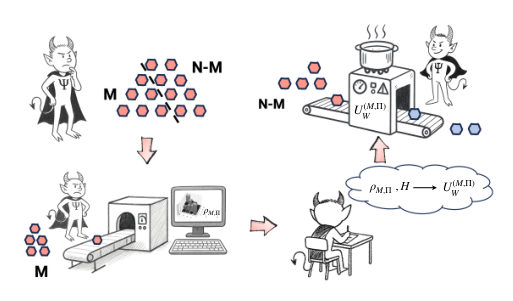
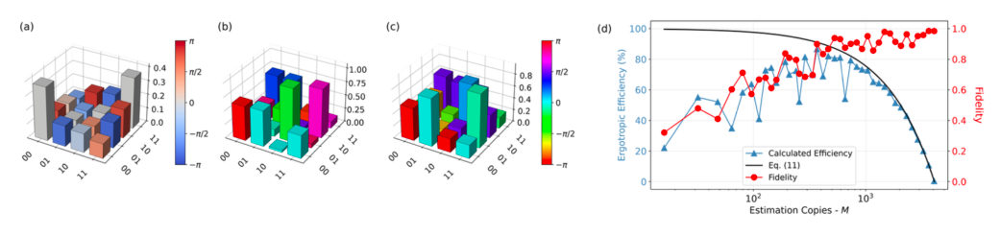
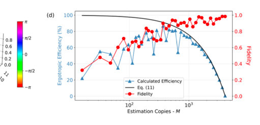
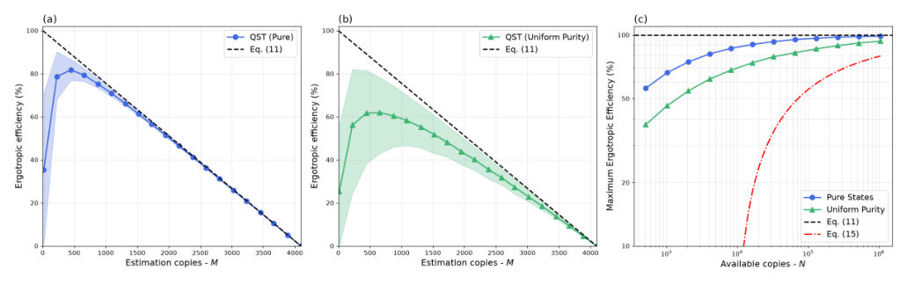
Summary. This paper develops a theoretical framework for quantum work extraction when information is incomplete and resources are finite, modeling a 'quantum Maxwell's demon.' It derives a universal trade-off bound showing that the achievable work efficiency is limited by the resource allocation, scaling as $1 - O(N^{-1/3})$. This highlights that thermodynamic performance, not just state fidelity, dictates the ultimate limits of quantum information processing.
Why it may be interesting. This work provides a rigorous, resource-limited thermodynamic cost for quantum inference, which is crucial for understanding the practical limits of quantum measurement and information processing in non-equilibrium quantum systems.
Main problem. The paper investigates the fundamental trade-off in quantum work extraction when the initial state information is only partially known and limited by a finite number of measurement copies.
Main result. A universal closed-form trade-off bound is derived, showing that the maximum achievable efficiency scales as $1 - O(N^{-1/3})$, which is slower than naive bounds and depends critically on the state's reconstruction precision.
Method. The analysis introduces the Partial-Information and Finite-Resources (PIFR) quantum Maxwell's demon protocol, deriving bounds by linking the work deficit to the trace distance between the true and reconstructed state.
Model / system. The system is a quantum state $ ho$ evolving under a known Hamiltonian $H$. The process involves using $M$ out of $N$ identical copies to estimate the state, which then dictates the unitary operation applied to the remaining $N-M$ copies.
Key observables. Work extraction efficiency ($\eta_{M,\Pi}$), ergotropic deficit ($\Delta W$), and reconstruction error (trace distance $D( ho, ho_{M,\Pi})$).
Important parameters / regimes. The optimal resource allocation $M^* \propto N^{2/3}$, and the scaling of the efficiency approach to the limit, $N^{-1/3}$.
Assumptions / limitations. The measurement on one copy is destructive, and the analysis relies on bounding the work deficit using the trace distance.
Figures summary. Figures schematically illustrate the PIFR protocol, showing the relationship between fidelity and efficiency versus the number of measurements ($M$), and plotting the optimal efficiency scaling with the total resource ($N$).
Paper structure. The paper builds from defining the PIFR demon and the efficiency metric, deriving the key ergotropic-deficit bound (Lemma 1), establishing the quantitative trade-off bound (Theorem 1), and finally optimizing the resource allocation to find the scaling of the maximum efficiency.
Information can be converted into work, but in quantum mechanics information about a state is not freely available: it must be inferred statistically from measurements on a finite number of copies. We study work extraction in this finite-resource setting by introducing a partial-information and finite-resources (PIFR) quantum Maxwell's demon. Given $N$ identical copies of a state with known Hamiltonian, the demon measures $M$ copies to estimate the state and the corresponding ergotropic unitary, which is then applied to the remaining $N-M$ copies. This protocol induces a trade-off between information acquisition, reconstruction accuracy, and thermodynamic yield, making the total extracted work normalized to the ideal ergotropic benchmark the relevant figure of merit. As our central result, we derive a universal closed-form trade-off bound that places this ergotropic efficiency between a Carnot-type ceiling $1-M/N$ and a floor controlled by a reconstruction precision rooted in finite-sample quantum estimation theory; optimizing the copy allocation yields $M^*\propto N^{2/3}$ and an $N^{-1/3}$ approach to the ideal limit, set by a conservative, worst-case reconstruction precision. By considering standard quantum state tomography, we numerically verify the presence of an optimal resource distribution, which also depends on the purity of the state under consideration. Our results identify finite-copy work extraction as a genuinely task-dependent inference problem, in which estimation strategies should be judged by thermodynamic performance rather than reconstruction fidelity alone.
Authors: Jianqi Zhong, Teng-Fei Ying, Jinyu Zou, Benjamin T. Zhou
Type: theory · Category: strongly correlated electrons · PDF: https://arxiv.org/pdf/2608.29833v1
Analysis basis: full PDF text, analyzed in chunks
Topic relevance: 🔥 analog quantum simulation 4/5
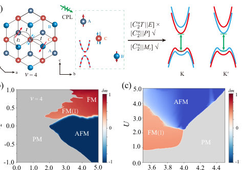
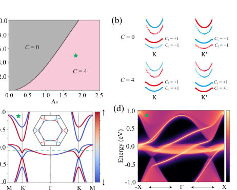
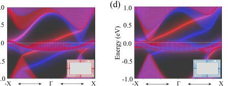
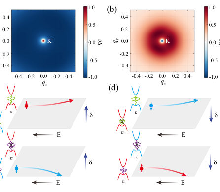
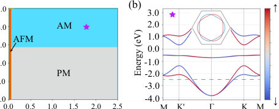
Summary. This work explores topological physics in a layered dice lattice using the Hubbard model. By applying circularly polarized light and external electric fields, the authors demonstrate the ability to switch the system between different correlated topological states, including spin-valley Hall insulators and Chern insulators. This establishes the lattice as a versatile platform for integrated spin-valley-layertronics.
Why it may be interesting. The combination of Floquet engineering (light driving) and electric field gating to control multiple coupled topological orders (spin, valley, layer) in a lattice model is highly relevant for designing artificial quantum materials and quantum simulators.
Main problem. The paper aims to reveal and control distinctive correlated topological phases within a layered dice lattice system under on-site Hubbard interactions.
Main result. The system exhibits an intrinsic spin-valley Hall insulator phase, which can be driven into a Floquet f-wave altermagnet and further controlled into a spin-valley-layer-polarized Chern insulator using external fields.
Method. The analysis involves using the Hubbard model, calculating low-energy effective Hamiltonians, and determining topological invariants like the Chern number using symmetry analysis.
Model / system. The physical platform is a layered dice lattice, modeled using the Hubbard Hamiltonian. The system's behavior is studied at a specific band filling ($ u=4$) and is manipulated by circularly polarized light (CPL) and vertical displacement fields.
Key observables. Spin-valley Chern number ($C_{s,\chi}$), spin-valley-layer locking (SVLL), and the topological phase transitions induced by external fields.
Important parameters / regimes. Band filling ($ u=4$), Hubbard interaction ($U$), light intensity ($ ext{|F}\eta|$), and the strength of the electric field ($\delta$).
Assumptions / limitations. The analysis relies on deriving low-energy effective Hamiltonians and assumes certain symmetry properties (e.g., PT symmetry in the initial state).
Figures summary. Figures illustrate the dice-lattice geometry, magnetic phase diagrams, the evolution of topological phases under light, and the resulting f-wave altermagnetic band structures with edge states.
Paper structure. The paper progresses from establishing the AFM ground state, to analyzing the topological changes induced by CPL (Floquet driving), and finally demonstrating electrical control via a vertical displacement field to achieve spin-valley-layer polarization.
The recent discovery of long-sought dice flat band in layered YCl electride has opened up rich possibilities of correlation and topological physics in dice lattice systems [Nature Communications 17, 2213 (2026), arXiv:2509.05958]. Here, we reveal a plethora of distinctive correlated topological phases in a generic layered dice lattice system at band filling of $ν=4$ under on-site Hubbard interactions: (i) the system is an intrinsic sublattice anti-ferromagnetic (AFM) quantum spin-valley Hall insulator; (ii) a circularly polarized light (CPL) drives the AFM spin-valley insulator into a Floquet odd-parity $f$-wave altermagnet(AM) insulator; (iii) a vertical displacement field turns the Floquet $f$-wave AM insulator into a spin-valley-layer-polarized Chern insulator, with the sign of spin, valley and Chern number all controlled by the direction of the displacement field. Our results not only establish the layered dice lattice as a versatile platform for electrically switchable magnetic and topological phases, but also provide an all-electrical scheme for integrated spin-valley-layertronics for non-volatile information storage and processing.
Authors: Yuichiro Minato
Type: theory · Category: strongly correlated electrons · PDF: https://arxiv.org/pdf/2608.29017v1
Analysis basis: full PDF text, analyzed in chunks
Topic relevance: 🔥 analog quantum simulation 4/5
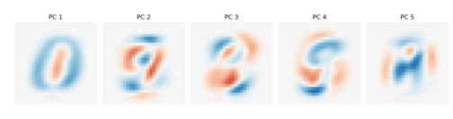
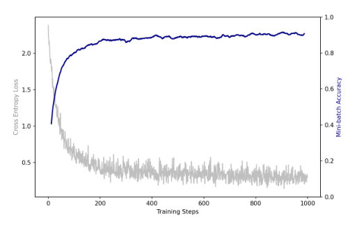
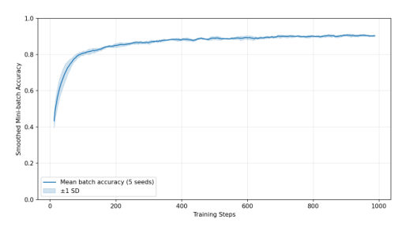
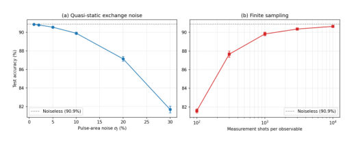
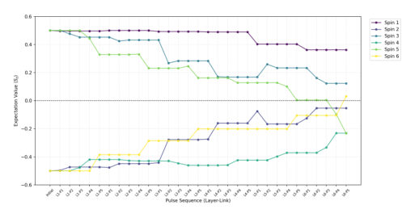
Summary. The authors propose a novel, hardware-efficient QML protocol for spin chains that uses only controllable exchange interactions, eliminating the need for complex magnetic field gradients. By exploiting the non-commutativity of sequential exchange pulses, they encode classical data into the time-domain dynamics of the spin system. This method achieves high classification accuracy on MNIST, proving that intrinsic spin-spin interactions can power complex quantum computation.
Why it may be interesting. This work directly addresses the hardware bottleneck in quantum computation by showing that complex quantum processing can be achieved using only the inherent, controllable exchange interactions present in solid-state spin systems, which is highly relevant to AMO physics and quantum simulation.
Main problem. Developing a resource-efficient Quantum Machine Learning (QML) architecture for spin chains that achieves high expressibility without relying on local magnetic field gradients or complex hardware.
Main result. The model achieved a test-set accuracy of 90.9% on MNIST classification, demonstrating that intrinsic, time-domain dynamics can implement a genuinely non-linear and trainable feature map.
Method. The Time-Encoded Exchange (TE-EX) protocol utilizes the non-commutativity of overlapping inter-pair Heisenberg exchange pulses to induce complex state mixing, bypassing the need for external magnetic gradients.
Model / system. The system is a linear chain of six semiconductor spin qubits governed by an isotropic Heisenberg exchange interaction. The dynamics are controlled by time-dependent, non-commuting exchange pulses within the $M_z=0$ sector.
Key observables. Test-set accuracy (90.9%), quantum feature map performance (88.1% vs 83.2% classical baseline), local magnetizations ($\langle S_{z,i} angle$), and nearest-neighbor exchange correlations ($\langle h_{i,i+1} angle$).
Important parameters / regimes. The protocol relies on the non-commutativity of sequential pulses, and the training uses a variational mapping $ heta^{(l)}_i (\mathbf{x}) = \gamma \cdot anh(\dots)$ to modulate pulse areas.
Assumptions / limitations. The approach assumes the use of only the isotropic Heisenberg exchange interaction and relies on the ability to train data-dependent pulse areas.
Figures summary. Figures illustrate the test accuracy degradation under noise, the evolution of local magnetizations during the pulse sequence, and heatmaps showing how learned weights selectively couple PCA features to specific quantum links.
Paper structure. The paper introduces the hardware limitation (need for gradients), proposes the TE-EX protocol leveraging non-commuting dynamics, details the QML implementation using PCA input encoding and a variational pulse sequence, and validates the method via MNIST classification and noise robustness testing.
Standard universal quantum computing using exchange-only qubits typically requires three physical spins per logical qubit, leading to significant hardware overhead. Conversely, two-spin units offer higher density but rely on local magnetic field gradients for control, increasing integration complexity. In this paper, we propose a resource-efficient quantum machine learning (QML) architecture that achieves high expressibility using minimal two-spin units and Heisenberg exchange interactions alone, without any magnetic gradients. We shift the paradigm from universal gate-based control to utilizing the intrinsic, time-domain dynamics of a spin chain as a learning resource. Numerical simulations on MNIST digit classification demonstrate that the symmetry-protected constraints of isolated spin pairs are bypassed by leveraging inter-pair exchange coupling. This interference-mediated state mixing significantly enhances the expressibility of the Hilbert space. The model reaches a test-set accuracy of 90.9% +/- 0.2% over five independent seeds on the full 10,000-image MNIST test set. Under an identical linear readout, the trained quantum feature map (88.1%) clearly outperforms a classical linear baseline on the same PCA inputs (83.2%) as well as an untrained (reservoir-style) version of the same dynamics (53.0%), demonstrating that the learned, input-dependent exchange pulses implement a genuinely non-linear and trainable feature map. The protocol is also robust to experimentally relevant imperfections: accuracy remains at 89.9% under 10% quasi-static pulse-area noise and at 89.8% when every observable is estimated from 10^3 measurement shots. These findings suggest that competitive QML can be executed on the simplest possible semiconductor spin-chain hardware, bypassing the need for leakage-prone encodings or complex micro-magnet integration.
Authors: Jung-Wan Ryu, Yong-Hoon Lee, Muhan Choi, Chang-Hwan Yi, Martina Hentschel
Type: theory · Category: disordered systems and neural networks · PDF: https://arxiv.org/pdf/2608.29795v1
Analysis basis: full PDF text, analyzed in chunks
Topic relevance: driven-dissipative phase transition 3/5 · methods for driven-dissipative 3/5 · non-equilibrium universality 3/5 · Keldysh / 2PI / non-Gaussian methods 2/5 · correlated / nonlocal dissipation 2/5 · interference shaping light 2/5 · Frenkel-Kontorova 1/5 · analog quantum simulation 1/5 · quantum measurements 1/5 · scars & prethermalization 1/5




Summary. This paper reveals that the unexpected localization of resonances in open spiral microcavities is caused by a generalized non-Hermitian skin effect acting in the phase space momentum. The authors map the physical geometry to an inhomogeneous-loss Hatano-Nelson model, showing that the combination of geometric momentum drift and refractive escape drives this critical-line localization.
Why it may be interesting. This work provides a powerful, generalized framework for understanding localization in open, wave-guiding structures by connecting geometric optics (TIR) to the mathematical formalism of non-Hermitian physics (NHSE).
Main problem. The paper addresses the physical mechanism responsible for the systematic accumulation of localized resonances near the critical line for total internal reflection in open, chaotic spiral microcavities.
Main result. The localization is attributed to a generalized non-Hermitian skin effect (NHSE) occurring in the phase space momentum, extending the concept beyond standard nonreciprocal lattices.
Method. The authors establish a physical correspondence between the microcavity's dielectric phase space and an inhomogeneous-loss Hatano-Nelson model, analyzing the resulting spectral and spatial properties.
Model / system. The system is an open, spiral-shaped dielectric microcavity. The dynamics are mapped onto an inhomogeneous-loss Hatano-Nelson model, incorporating geometry-induced momentum drift and refractive escape governed by a critical momentum $p_c$.
Key observables. Localized resonances, momentum distributions accumulating near $p_c$, complex-energy spectrum, and Boundary Husimi distribution $H(s, p)$.
Important parameters / regimes. Critical momentum $p_c = 1/n$, hopping asymmetry ratio $t_R / t_L$, and the degree of loss ($\gamma$).
Assumptions / limitations. The analysis assumes the existence of a physical correspondence between the dielectric dynamics and the Hatano-Nelson model, and that the dominant localization peak can be reliably identified via $p_{ ext{max}}$.
Figures summary. Figures illustrate localized resonances in the microcavity vs. closed billiard, the Hatano-Nelson model spectrum showing separation, and the Poincaré surface of section detailing momentum drift and the role of $p_c$.
Paper structure. The paper progresses by first identifying the localization anomaly, establishing the mapping to the Hatano-Nelson model, demonstrating the generalized NHSE mechanism via momentum drift and escape, and finally confirming this mechanism using detailed phase-space diagnostics.
Contrary to the semiclassical expectation for fully chaotic systems, localization of resonances is found to be a common feature in open microcavities. In spiral-shaped dielectric microcavities, a substantial fraction of resonances localize on polygonal patterns in real space, are chiral, and their momentum distributions accumulate near the critical line for total internal reflection. Despite the extensive investigation, the physical mechanism responsible for their remarkable abundance has remained a long-standing question. Addressing this, we reveal a physical correspondence between an inhomogeneous-loss Hatano-Nelson model and the dielectric phase space of a spiral microcavity. We show that the combination of geometry-induced momentum drift and refractive escape yields a generalized non-Hermitian skin effect in the phase space momentum. We identify this mechanism as the origin of the critical-line localization of resonances in open chaotic spiral microcavities, extending the skin-effect concept beyond nonreciprocal lattices to phase space and to open chaotic wave systems.
Authors: Gu Zhang, Gabriele Campagnano, Domenico Giuliano, Igor Gornyi, Ines Safi
**Type:** theory · **Category:** strongly correlated electrons · **PDF:** <https://arxiv.org/pdf/2608.30535v1>
**Analysis basis:** full PDF text, analyzed in chunks
**Topic relevance:**Full counting statistics**3/5** ·Keldysh / 2PI / non-Gaussian methods**3/5** ·correlated / nonlocal dissipation**3/5** ·driven-dissipative phase transition**2/5** ·methods for driven-dissipative**2/5** ·non-equilibrium universality**2/5** ·quantum measurements**2/5** ·analog quantum simulation` 1/5
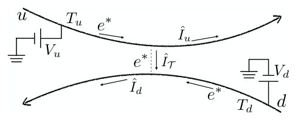
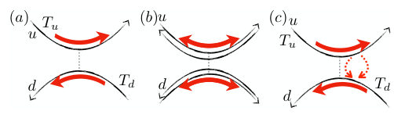
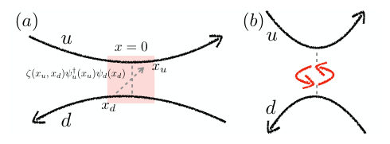
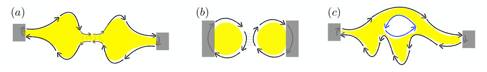
Summary. This work provides a comprehensive theoretical analysis establishing exact fluctuation-dissipation relations for chiral edge states coupled through a QPC. It shows that local tunneling noise can be reliably reconstructed from measurable downstream current correlations, even under extreme non-equilibrium conditions like temperature gradients. This offers a robust, model-independent method for characterizing transport in topological quantum materials.
Why it may be interesting. The rigorous derivation of model-independent FDRs in non-equilibrium topological systems provides powerful diagnostic tools for characterizing exotic quantum states, which is highly relevant for understanding open quantum systems dynamics.
Main problem. The paper aims to establish robust, model-independent fluctuation-dissipation relations (FDRs) connecting measurable current correlations to the local tunneling-current noise in chiral edge states.
Main result. An exact, non-perturbative zero-frequency fluctuation relation is derived, proving its validity for arbitrary tunneling strengths, voltage biases, and temperature differences between the two chiral edges.
Method. The analysis uses a non-perturbative theoretical framework based on general non-equilibrium response identities applied to bosonic descriptions of Laughlin edge states.
Model / system. The system models two chiral Laughlin edge states (e.g., in a Fractional Quantum Hall system) coupled via a Quantum Point Contact (QPC). The physics is described using bosonic operators derived from the edge excitations.
Key observables. Tunneling-current noise ($\hat{S}_T(0)$), auto-correlations ($\hat{S}_{\alpha\alpha}(0)$), and cross-correlations ($\hat{S}_{ud}(0)$) of the chiral currents.
Important parameters / regimes. Voltage bias ($V_u, V_d$), edge-state temperatures ($T_u, T_d$), and the tunneling strength/amplitude.
Assumptions / limitations. The generalization requires the QPC size to be much smaller than the charge and thermal equilibration length, but larger than the thermal diffusion length.
Figures summary. Figure 1 illustrates the setup for the zero-frequency fluctuation relation, while Figure 2 depicts the scenario involving a temperature difference between the two channels.
Paper structure. The paper develops the theoretical framework by defining the system Hamiltonian and current operators, derives the non-equilibrium fluctuation relation, and then generalizes this relation to include spatially extended QPCs, temperature gradients, and bias-dependent tunneling amplitudes.
We present a comprehensive analysis of non-equilibrium fluctuation-dissipation relations connect- ing experimentally accessible chiral-current auto- and cross-correlations to the tunneling-current noise and conductance in Laughlin edge states coupled through a quantum point contact (QPC). We examine their validity for two chiral Laughlin edges held at different temperatures and voltages and show that the relations remain exact for arbitrary tunneling strength, voltage bias, and edge- state temperatures. We further generalize them to spatially extended QPCs and to tunneling am- plitudes with an explicit voltage dependence, and discuss the conditions and limitations associated with these generalizations. Our results establish that the local tunneling-current noise generated at the QPC can be reliably reconstructed from experimentally accessible auto- and cross-correlations measured downstream, providing a robust route to characterize non-equilibrium transport in chiral edge states.
Authors: X. Z. Zhang, Hechen Ren
Type: theory · Category: other · PDF: https://arxiv.org/pdf/2608.29787v1
Analysis basis: full PDF text, analyzed in chunks
Topic relevance: Keldysh / 2PI / non-Gaussian methods 3/5 · correlated / nonlocal dissipation 3/5 · driven-dissipative phase transition 3/5 · interference shaping light 3/5 · methods for driven-dissipative 3/5 · non-equilibrium universality 2/5 · quantum measurements 1/5
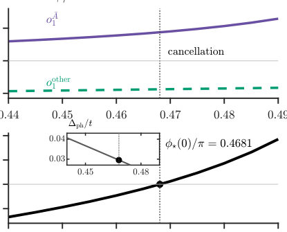
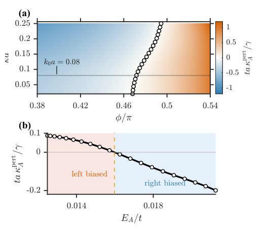
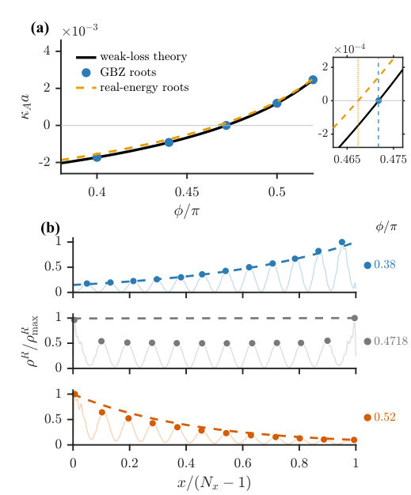
Summary. This paper demonstrates that the Josephson phase in a superconducting junction can reversibly control the direction of non-Bloch quasiparticle propagation in the Andreev band. By tuning the phase, the system undergoes a transition driven by destructive interference among virtual electronic states, effectively switching the boundary accumulation from one edge to the other. This offers a novel, purely electrical method for reconfiguring non-Hermitian transport in superconducting platforms.
Why it may be interesting. This work provides a clean, tunable mechanism—using only the superconducting phase—to control non-Hermitian transport directionality in superconducting circuits, which is highly relevant for superconducting quantum devices and topological physics.
Main problem. The research addresses how to reverse the non-Bloch spatial propagation (boundary accumulation) of low-energy Andreev bands in a superconducting junction without physically altering the fixed dissipative structure.
Main result. The Josephson phase ($\phi$) acts as a control knob, reversing the directional decay imbalance and transferring the boundary accumulation from one junction edge to the other via destructive interference among virtual Bogoliubov-de Gennes (BdG) level contributions.
Method. The analysis employs weak-loss theory and complex-momentum root decomposition of the retarded Green's function to calculate the spatial decay exponents ($\kappa$).
Model / system. The system is a spin-orbit-coupled planar Josephson junction featuring a fixed, spin-selective reservoir that introduces non-Hermitian dissipation into the effective Bogoliubov-de Gennes (BdG) Hamiltonian.
Key observables. Boundary accumulation (spatial exponent $\kappa_A$), directional ratio ($R_{ ext{all}}$), and the Josephson phase ($\phi$).
Important parameters / regimes. Josephson phase ($\phi$), decay parameters ($\Gamma_0, \gamma$), and the junction length ($L$).
Assumptions / limitations. The analysis relies on weak-loss theory approximations and the assumption that the reversal is driven by interference effects rather than a gap closing.
Figures summary. Figures illustrate the phase-controlled reversal of boundary accumulation, showing the sign change of various decay exponents ($\kappa_{ ext{pert}}^A$, $\kappa_{GBZ}^A$, $\kappa_{ ext{prop}}^A$) and the resulting opposite biases in finite-chain density profiles.
Paper structure. The paper builds the argument by first defining the non-Hermitian model, then deriving the spatial exponents using weak-loss theory, demonstrating the phase-induced sign change in these exponents, and finally confirming the directional reversal using finite-chain simulations and directional ratio measurements.
Non-Hermitian control is difficult in solid-state systems due to fixed dissipation. Here, we show that in a spin-orbit-coupled planar Josephson junction, changing only the Josephson phase reverses the non-Bloch propagation of a low-energy Andreev band and switches its boundary accumulation between junction edges. The phase reshapes the band's spin and electron-hole composition, causing a fixed reservoir to unequally attenuate counterpropagating modes. Weak-loss theory links this phase-controlled loss imbalance to boundary-selected complex momenta, offering an in situ route to reconfigurable non-Hermitian transport in superconducting platforms.
Authors: Janine C. Franz, Fabio Pistolesi
Type: theory · Category: other · PDF: https://arxiv.org/pdf/2608.28812v1
Analysis basis: full PDF text, analyzed in chunks
Topic relevance: correlated / nonlocal dissipation 3/5 · driven-dissipative phase transition 3/5 · methods for driven-dissipative 3/5 · Keldysh / 2PI / non-Gaussian methods 2/5 · analog quantum simulation 2/5 · non-equilibrium universality 2/5 · Tavis-Cummings & cavity-many-emitter 1/5 · quantum measurements 1/5
Summary. This paper develops a generalized Born-Markov framework using the slowly varying bath spectrum approximation to model dissipation in nanomechanical quantum Rabi systems. It successfully describes the system's dynamics across the entire parameter space, from weakly to strongly anharmonic regimes. The results offer a unified, experimentally applicable description for optimizing mechanical qubits in ultrastrong-coupling regimes.
Why it may be interesting. This work is highly relevant for AMO physicists working on open quantum systems, as it provides a robust, unified master equation approach for strongly coupled electromechanical systems, extending beyond standard approximations.
Main problem. The primary challenge is developing a consistent theoretical description of dissipation in the quantum Rabi model across the broad parameter space of the ultrastrong-coupling (USC) regime, where conventional treatments fail.
Main result. The authors establish a unified theoretical framework that accurately describes dissipation from weakly anharmonic to strongly anharmonic mechanical-qubit regimes, providing experimentally relevant predictions.
Method. They utilize a Born-Markov framework combined with the slowly varying bath spectrum (SVS) approximation to derive a generalized Lindblad master equation.
Model / system. The system models nanomechanical resonators (like suspended nanotubes) coupled to quantum two-level systems (TLS) via the quantum Rabi model. This forms a mechanical qubit platform.
Key observables. Two-phonon correlation function, finite-temperature correlation spectrum, and mean-square displacement under driving.
Important parameters / regimes. Ultrastrong-coupling (USC) regime, coupling strength ($g$), mechanical frequency ($\omega_m$), and temperature ($T$).
Assumptions / limitations. The core assumption is the validity of the SVS approximation, which allows the master equation to remain valid beyond the limitations of the standard secular approximation.
Figures summary. Figure 1 illustrates the physical setup: a suspended nanotube's flexural mode coupled to a double-quantum dot's charge states.
Paper structure. The paper progresses by first identifying the failure points of existing models (secular approximation breakdown), introducing the SVS Born-Markov framework, and then applying this framework to analyze key physical phenomena like phonon blockade crossover, temperature effects, and strong driving.
Mechanical resonators ultrastrongly coupled to quantum two-level systems provide a promising route towards mechanical qubits by introducing significant anharmonicity to the mechanical modes, particularly in the slow-oscillator regime. Although the resulting hybrid system is well described by the quantum Rabi model, a consistent treatment of dissipation remains challenging across the broad parameter space routinely probed in current nanotube electromechanical devices. Here, we investigate dissipation in the open quantum Rabi model using a Born-Markov framework based on the slowly varying bath spectrum approximation, yielding a Lindblad master equation applicable far beyond conventional descriptions while recovering them in their respective limits. Using this framework, we analyze experimentally accessible observables across this parameter space. As the secular approximation breaks down, phonon blockade progressively washes out. Our approach remains valid in this regime, enabling a quantitative description of the continuous evolution of phonon blockade with coupling strength and dissipation. At finite temperature, we find a suppression of the temperature-induced increase of coherence decay rate for weak anharmonicity. Under driving, our approach remains applicable to substantially stronger perturbations than conventional dressed-state master equations and shows that an apparently classical observable can coexist with Wigner negativity. We further capture the weakly anharmonic regime arising from finite detuning in the double-quantum dot. These results establish a unified description of dissipation from weakly anharmonic operating regimes to the strongly anharmonic mechanical-qubit regime and provide experimentally relevant predictions for ultrastrong electromechanical systems.
Authors: Tran Duong Anh-Tai, S. Zhong, X. Molenda, A. M. Marino, D. Blume
Type: both · Category: other · PDF: https://arxiv.org/pdf/2608.28808v1
Analysis basis: full PDF text, analyzed in chunks
Topic relevance: analog quantum simulation 3/5 · correlated / nonlocal dissipation 3/5 · driven-dissipative phase transition 3/5 · methods for driven-dissipative 3/5 · non-equilibrium universality 2/5 · QC/QI experiment 1/5 · quantum measurements 1/5 · quantum optics experiment 1/5
Summary. This research experimentally investigates quantum synchronization in a spin-1 system realized with cold $^{87} ext{Rb}$ atoms. By engineering the dissipation using additive Lindblad operators, the authors demonstrate that these non-conventional decay pathways can significantly enhance the observed quantum synchronization. The work validates the theoretical model against precise measurements, suggesting a general technique for controlling quantum dynamics in higher-spin systems.
Why it may be interesting. This work provides a concrete experimental platform (cold atoms) to study non-trivial open quantum system dynamics, specifically demonstrating how controlling dissipation (dissipation engineering) can actively enhance quantum coherence measures like synchronization.
Main problem. The paper investigates quantum synchronization in a spin-1 system, focusing on how engineered dissipative pathways can enhance this collective quantum behavior.
Main result. The implementation of additive Lindblad operators, achieved through dissipation engineering, was shown to enhance quantum synchronization in certain parameter regimes, with experimental results showing convincing agreement with simulations.
Method. The study uses a hybrid approach combining theoretical derivation (effective spin-1 master equation from a full 6-state Hamiltonian) with experimental realization using cold atoms.
Model / system. The system is an externally driven few-level system, effectively modeled as a spin-1 system, realized using cold $^{87} ext{Rb}$ atoms in a Magneto-Optical Trap (MOT). The dynamics are governed by an effective Lindbladian incorporating non-conventional dissipative pathways.
Key observables. Quantum synchronization measure $S_q(t, z)$, normalized probe beam intensity $I_{ ext{norm}}^{\pi}(t)$, and the effective spin-1 master equation.
Important parameters / regimes. Rabi coupling strengths ($\Omega$), decay rates ($\Gamma$), magnetic field strength ($B$), and the relative phase ($\alpha$).
Assumptions / limitations. The derivation relies on second-order time-dependent perturbation theory, and the MOT is treated as a 1D medium with low atomic density.
Figures summary. Figures illustrate the laser beam geometry, energy level diagrams, Husimi-Q functions, and quantitative comparisons of the synchronization measure $S_q$ between the effective spin-1 model and the full 6-state model, alongside time evolution of probe intensity.
Paper structure. The paper progresses from establishing the physical setup and deriving the effective spin-1 model from the full 6-state Hamiltonian, demonstrating the enhancement of synchronization due to engineered dissipation, and finally validating these findings by comparing simulation results against experimental measurements of probe intensity.
We experimentally investigate quantum synchronization for one of the simplest possible quantum systems, namely an externally driven few-level system with equally spaced energy levels effectively acting as a spin-1 system. Coupling to excited auxiliary states, we realize additive effective Lindblad operators that are associated with non-conventional dissipative pathways, which are shown to enhance, in certain parameter regimes, quantum synchronization. The experimental set-up, which utilizes cold $^{87}$Rb atoms in a MOT, and associated synchronization extraction protocol are benchmarked carefully through dedicated simulations. Convincing agreement is found between experiment and simulations. The dissipation engineering approach established in our work can be readily extended to systems with more energy levels, such as effective spin-$3/2$ or spin-$2$ systems, and has implications for quantum synchronization studies in higher-spin systems as well as for a wide range of quantum science studies and technology applications.
Authors: YuanDong Wang, JianHua Wei
Type: theory · Category: other · PDF: https://arxiv.org/pdf/2608.30324v1
Analysis basis: full PDF text, analyzed in chunks
Topic relevance: Keldysh / 2PI / non-Gaussian methods 3/5 · driven-dissipative phase transition 3/5 · methods for driven-dissipative 3/5 · non-equilibrium universality 3/5 · correlated / nonlocal dissipation 2/5 · quantum measurements 2/5 · analog quantum simulation 1/5

Summary. This theoretical study explains how electrical bias drives a reservoir-induced orbital Hanle effect in a quantum dot system, leading to the generation and reversal of scalar spin chirality. The mechanism involves the interplay between dissipative tunneling preparing an orbital pseudospin and virtual charge fluctuations generating a precessing Lamb field. This work highlights that time-reversal-odd responses can emerge purely from the non-commutative action of open system dynamics.
Why it may be interesting. The work provides a detailed theoretical framework for how non-equilibrium, dissipative processes can generate robust, measurable time-reversal-odd responses like spin chirality in mesoscopic conductors, which is highly relevant to spintronics and topological quantum materials.
Main problem. The paper investigates the emergence and reversal of scalar spin chirality in open quantum systems driven by electrical bias, specifically addressing mechanisms that generate such chirality without explicit time-reversal symmetry breaking in the Hamiltonian.
Main result. The chirality arises from a reservoir-induced orbital Hanle effect, where the interplay between dissipative tunneling (preparing an orbital pseudospin) and virtual charge fluctuations (generating a Lamb field) causes the current to reverse when the relative orientation of these two fields changes.
Method. The analysis uses the channel-restricted second-order GKSL equation and employs symmetry-derived identities linking the circulating current to the chirality, supplemented by time-domain quench analysis.
Model / system. The model is a triangular triple quantum dot structure, analyzed in the three-electron Coulomb valley, coupled to external reservoirs via tunneling terms.
Key observables. Circulating Current (I_c), Scalar Spin Chirality ($\hat{\chi}$), Orbital Pseudospin ($\mathbf{r}$), and the Lamb Field ($\mathbf{h}$).
Important parameters / regimes. Bias voltage (DC bias), coupling strength ($\zeta$), and the relative orientation between the dissipative pump ($\sigma$) and the Lamb field ($\mathbf{h}$).
Assumptions / limitations. The analysis relies on a ground-multiplet identity relating chirality to the zero-flux current, and comparisons are made between full HEOM and restricted GKSL descriptions.
Figures summary. Figures illustrate the device setup and physical mechanism, show the bias evolution of $\mathbf{h}$, $\sigma$, and $r_z$, and demonstrate the time evolution of chirality ($r_z$) starting quadratically after a bias quench.
Paper structure. The paper establishes the physical mechanism, derives the governing equations for the pseudospin and Lamb field, analyzes the stationary state to find the current-chirality relation, and finally examines the time-domain dynamics via bias quenching.
Circulating currents in triangular triple quantum dots reverse repeatedly with bias even at zero magnetic flux and for a real Hamiltonian, a phenomenon whose origin has remained unclear. We show that dissipative tunneling prepares an orbital pseudospin, while virtual charge fluctuations generate a noncollinear Lamb field that rotates it toward the chiral direction. Bias changes their relative orientation and thereby reverses the current. This reservoir-induced orbital Hanle effect converts a nonchiral orbital polarization into scalar spin chirality, which an exact ground-multiplet identity links to the circulating current. Hierarchical-equations-of-motion calculations show that the low-bias reversal survives beyond the second-order weak-coupling description, while the quadratic growth of chirality after a sudden voltage switch identifies precession. More broadly, time-reversal-odd responses can emerge in open quantum systems from the interplay between dissipative state preparation and coherent precession.
Authors: Doojin Kim, Balbeer Singh
Type: theory · Category: other · PDF: https://arxiv.org/pdf/2608.31173v1
Analysis basis: full PDF text, analyzed in chunks
Topic relevance: Keldysh / 2PI / non-Gaussian methods 3/5 · correlated / nonlocal dissipation 3/5 · driven-dissipative phase transition 3/5 · methods for driven-dissipative 3/5 · non-equilibrium universality 2/5 · quantum measurements 1/5
Summary. This paper develops a quantum computing framework to simulate open quantum dynamics relevant to heavy-ion collisions, covering both Markovian and non-Markovian regimes. It achieves this by introducing an auxiliary pseudomode that explicitly carries the bath's memory, allowing for accurate simulation of complex time evolution. The framework validates the feasibility of using quantum circuits for studying hard probes in extreme physical environments.
Why it may be interesting. This work is highly relevant as it provides a concrete, implementable quantum simulation protocol for complex, memory-dependent open quantum dynamics, bridging theoretical physics with quantum computation.
Main problem. The paper addresses the challenge of simulating open quantum system dynamics, specifically modeling the interaction of a subsystem with a thermal bath in the context of heavy-ion collisions.
Main result. A quantum computing framework is established that successfully simulates both Markovian and non-Markovian open quantum evolution by introducing an auxiliary pseudomode to capture memory effects.
Method. The simulation employs a quantum circuit approach, utilizing an auxiliary two-level pseudomode to model the bath memory kernel, which is then traced out to recover the full non-Markovian dynamics.
Model / system. The system models a subsystem (e.g., a bound state) interacting with a thermal bath, described by a general non-Markovian master equation. The dynamics are analyzed in the non-relativistic effective field theory framework.
Key observables. Survival probability of the bound state ($P_{bound}(t)$), and the reduced subsystem density matrix ($ ho_S$).
Important parameters / regimes. Bath correlation time ($ au_c$), which dictates the transition between the Markovian ($ au_c o 0$) and non-Markovian ($ au_c \sim 1/E_b$) regimes.
Assumptions / limitations. The bath is assumed stationary, and the analysis relies on introducing a pseudomode to explicitly handle the memory kernel, which is shown to converge to the Markovian limit when appropriate time scales are considered.
Figures summary. Figure 5 compares the bound state survival probability for different correlation times ($ au_c$), showing the non-Markovian results approaching the Markovian limit as $ au_c$ decreases.
Paper structure. The paper first establishes the general non-Markovian master equation, then introduces the pseudomode technique to model memory effects, derives the Markovian limit (Lindblad form), and finally demonstrates the feasibility of simulating both regimes using quantum circuits.
We present a quantum computing framework for simulating open-quantum-system approaches based on Markovian and non-Markovian dynamics, which is relevant to heavy-ion collisions. To simulate the non-Markovian evolution on quantum computers, we introduce an auxiliary two-level pseudomode that carries the memory forward and couples to both the subsystem and the residual Markovian bath. We explicitly show that tracing out the pseudomode reproduces the non-Markovian evolution with the exact memory kernel. Moreover, in the relevant time scale hierarchy, the quantum circuit construction of the pseudomode smoothly converges to the Markovian limit. For a given bath memory kernel, our results demonstrate the feasibility of quantum simulations of both Markovian and non-Markovian dynamics, establishing a framework for future studies of hard probes such as jets, heavy quarks, and quarkonia in heavy-ion collisions.
Authors: Nissi Thomas, M. Senthilvelan
Type: theory · Category: other · PDF: https://arxiv.org/pdf/2608.29185v1
Analysis basis: full PDF text, analyzed in chunks
Topic relevance: driven-dissipative phase transition 3/5 · methods for driven-dissipative 3/5 · Keldysh / 2PI / non-Gaussian methods 2/5 · analog quantum simulation 2/5 · correlated / nonlocal dissipation 2/5 · non-equilibrium universality 2/5 · quantum measurements 1/5
Summary. This paper analyzes the synchronization dynamics in two quadratically coupled quantum oscillators driven by an external field. It finds that the quadratic coupling induces a unique 2:1 phase-locking pattern in one oscillator while simultaneously causing a 'synchronization blockade' for conventional 1:1 locking. The study rigorously separates the classical prediction from the quantum mechanism, highlighting the role of quantum selection rules in engineering nonclassical phase relationships.
Why it may be interesting. This work is highly relevant as it explores how non-linear, high-order coupling terms (quadratic coupling) impose quantum selection rules that fundamentally alter synchronization behavior, providing insights for quantum control.
Main problem. The paper investigates the complex synchronization dynamics, specifically focusing on the emergence of second harmonic phase locking and the mechanism behind a synchronization blockade, in a system of quadratically coupled driven quantum van der Pol oscillators.
Main result. The quadratic coupling enforces a quantum selection rule that causes the first oscillator to exhibit a 2:1 phase-locking structure while blocking conventional 1:1 locking, a phenomenon distinguishable from the classical mean-field predictions.
Method. The study employs a combination of quantum master equation analysis (using perturbation theory in a low excitation subspace) and classical mean-field analysis to characterize the system's phase dynamics.
Model / system. The model consists of two quantum van der Pol oscillators coupled quadratically, with an external drive applied selectively to the second oscillator. The dynamics are governed by a master equation involving quadratic coupling terms.
Key observables. Phase-locking structure (2:1 vs 1:1), synchronization blockade, phonon statistics, and spectral responses.
Important parameters / regimes. The analysis is performed in the low excitation subspace ($\mathfrak{n} \le 2$) and considers regimes defined by coupling strengths ($ u$) and driving amplitudes ($\Omega$).
Assumptions / limitations. The analysis relies on the low excitation subspace approximation and distinguishes between the structure predicted by classical mean-field theory and the microscopic origin revealed by quantum analysis.
Figures summary. Figure 1 schematically illustrates the energy level diagram, showing bare states, eigenstates ($\Psi_\pm$), and energy splitting proportional to the coupling strength $ u$ within the $\mathfrak{n}=2$ manifold.
Paper structure. The paper first introduces the physical model and the master equation. It then analyzes the phase-locking geometry using classical mean-field theory, followed by a detailed quantum analysis using perturbation theory to pinpoint the microscopic origin of the synchronization blockade and mutual synchronization.
We investigate the dynamics of a quadratically coupled system under the influence of an external drive applied to the second oscillator, where the coupling facilitates a high-order synchronization with phase-locking emerging in the form of 2:1 between the oscillators. Our analysis reveals a synchronization blockade in the first oscillator, characterized by the complete suppression of conventional 1:1 phase-locking with the drive. In contrast, we observe that the directly driven second oscillator synchronizes with the drive, showing 1:1 phase-locking but notably at second harmonic frequency. A classical mean-field analysis of the corresponding equations of motion reproduces this asymmetric phase-locking geometry which demonstrates that the phase-locking structure itself can be understood from the nonlinear classical dynamics. The quantum analysis, however, reveals the microscopic origin of the synchronization blockade. Furthermore, we show that the system exhibits mutual synchronization when both the oscillators satisfies the resonance condition, enabling coherent energy exchange facilitated by nonlinear quadratic coupling. The mutual synchronization shows synchronized regimes and also subtle suppression of synchronized regimes near resonance occurring due to spectral splitting of the energy states. Using perturbation analysis of the master equation within the low excitation subspace, we analyze steady-state phase distribution and synchronization measures, supported by population statistics and spectral responses. We also propose possible experimental realizations in trapped-ions and optomechanical setups. These findings highlight the crucial role of quadratic coupling in enabling nonclassical synchronization phenomena, offering deeper insights for quantum control strategies and the development of quantum information platforms.
Authors: Avi Marchewka
Type: theory · Category: other · PDF: https://arxiv.org/pdf/2608.29969v1
Analysis basis: full PDF text, analyzed in chunks
Topic relevance: correlated / nonlocal dissipation 3/5 · driven-dissipative phase transition 3/5 · quantum measurements 3/5 · Keldysh / 2PI / non-Gaussian methods 2/5 · methods for driven-dissipative 2/5 · non-equilibrium universality 2/5
Summary. This paper compares the standard Robin boundary condition model for particle absorption with the more general Marchewka–Schuss (MS) unidirectional current formalism. It proves that the Robin model is a special case of the MS construction, demonstrating that the MS framework is more general by allowing for unit absorption efficiency. This has implications for accurately modeling quantum detection processes in open quantum systems.
Why it may be interesting. This work provides a rigorous mathematical generalization of boundary absorption models, which is crucial for accurately modeling open quantum systems where particle loss or detection is involved.
Main problem. The paper compares two theoretical frameworks—the generalized Marchewka–Schuss (MS) unidirectional current and the absorbing Robin boundary condition—used to model particle detection in quantum mechanics.
Main result. The entire one-parameter Robin absorption family is shown to be contained within the more general MS framework, which allows for unit absorption efficiency unattainable by fixed Robin parameters.
Method. The comparison involves matching the spectral amplitudes of the absorption currents derived from both the Robin boundary condition and the generalized MS spectral function.
Model / system. The model considers a free scalar particle propagating in one spatial dimension within a single-pass half-line geometry, analyzed using quantum wave mechanics.
Key observables. Absorption current ($j_{ABC}$ vs $J_{UD}$), absorption probability, and the spectral response function $\lambda(k)$.
Important parameters / regimes. The Robin parameter $\kappa > 0$, the spectral response function $\lambda(k)$, and asymptotic regimes (ballistic fixed-ray vs. fixed-distance late-time).
Assumptions / limitations. The analysis relies on matching detector statistics and utilizes the stationary phase approximation for asymptotic behavior.
Paper structure. The paper introduces the two models, derives the relationship between their respective spectral functions, proves the containment of the Robin family within the MS family, and compares their asymptotic behavior in different physical limits.
For a free scalar particle in one spatial dimension, in a single-pass half-line geometry, we compare the absorbing Robin boundary condition with the generalized Marchewka--Schuss (MS) unidirectional-current family. Robin absorption is characterized by a single parameter $κ>0$: once $κ$ is specified, its momentum-dependent absorption profile is fixed. In the generalized MS construction, by contrast, the detector response is described by a spectral function $λ(k)$, subject to the positivity and subnormalization conditions of the detection law. We show that every Robin choice of $κ$ corresponds to the particular MS calibration $λ_κ(k)=πκ/(k+κ)^2$, which reproduces the complete Robin absorption current for every admissible one-sided spectral amplitude and at every time. Thus the entire one-parameter Robin absorption family is contained within the generalized MS family. The MS construction is more general: the choice $λ_{\rm full}(k)=π/(4k)$ gives unit absorption efficiency for every wave number, which cannot be achieved by any fixed Robin parameter. In this precise sense, the generalized MS detector process extends the Robin absorbing-boundary family. We also compare their asymptotic behavior in the ballistic fixed-ray regime and in the fixed-distance late-time limit.
Authors: Silvio Kalaj, Dongho Lee, Enzo Marinari, Jae-Hyung Jeon, Pascal Viot, Gleb Oshanin
Type: theory · Category: statistical mechanics · PDF: https://arxiv.org/pdf/2608.29226v1
Analysis basis: full PDF text, analyzed in chunks
Topic relevance: driven-dissipative phase transition 3/5 · methods for driven-dissipative 3/5 · non-equilibrium universality 3/5 · Keldysh / 2PI / non-Gaussian methods 2/5 · analog quantum simulation 1/5 · correlated / nonlocal dissipation 1/5 · scars & prethermalization 1/5
Summary. This paper provides an exact theoretical analysis of an Ornstein-Uhlenbeck process driven by multiple independent dichotomous noises, moving beyond the standard Gaussian white noise assumption. The authors derive the stationary probability distribution, revealing non-trivial features like compact support and branch-point singularities. Furthermore, they analyze the complex asymptotic behavior of the disorder-averaged distribution, offering deep insights into non-equilibrium statistical mechanics.
Why it may be interesting. The analysis of non-equilibrium steady states driven by bounded, colored noise sources provides a powerful, exactly solvable framework for understanding complex dynamics in systems far from thermal equilibrium, relevant to driven quantum systems or non-Markovian baths.
Main problem. The study focuses on characterizing the stationary state of a generalized Ornstein-Uhlenbeck process driven by a superposition of multiple independent dichotomous noises.
Main result. The stationary distribution exhibits a rich structure, including compact support and algebraic branch-point singularities, fundamentally differing from the classical Gaussian case.
Method. The authors derive the stationary PDF using characteristic functions (involving Bessel functions) and establish an equivalent mapping to a heterogeneous random-flight process.
Model / system. The system is governed by the SDE $\dot{x}(t) = -\gamma x(t) + \sum_{k=1}^{K} \omega_k(t)$, where $\omega_k(t)$ are independent dichotomous noises switching between $\pm v_k$ with rates $\lambda_k$.
Key observables. Stationary position distribution $P(x)$, cumulants, and the disorder-averaged PDF $\Psi(x)$.
Important parameters / regimes. Relaxation rate ($\gamma$), amplitudes ($v_k$), switching rates ($\lambda_k$), and the number of noise sources ($K$).
Assumptions / limitations. The analysis involves complex asymptotic expansions of special functions (like the Gauss hypergeometric function) to determine the large-$|x|$ tails in the disorder-averaged case.
Figures summary. Figures illustrate sample trajectories for small $K$, and later figures compare simulated data against analytical predictions for the power-law corrections to the disorder-averaged PDF $\Psi(x)$ for various $K$.
Paper structure. The paper progresses from defining the model and deriving the exact stationary PDF for arbitrary $K$ (via random-flight mapping) to analyzing bulk properties, and finally tackling the highly technical problem of the large-$|x|$ asymptotics for the disorder-averaged PDF.
We study a generalized Ornstein-Uhlenbeck process driven by a superposition of $K$ independent dichotomous noises with arbitrary fixed amplitudes and switching rates. Unlike the classical Ornstein-Uhlenbeck process driven by equilibrium Gaussian white noise, the present system is governed by bounded nonequilibrium fluctuations with finite correlation times. We obtain exact expressions for the stationary position distribution and all cumulants, and show that the stationary state possesses an unexpectedly rich structure, including compact support, algebraic branch-point singularities, edge divergences, and multiple extrema. We establish a mapping onto a heterogeneous random-flight process with bounded jumps, yielding a transparent probabilistic interpretation of the stationary measure. We further analyze several limiting regimes, including the crossover to Gaussian statistics for large numbers of noise sources. For ensembles with exponentially-distributed quenched amplitudes, we derive exact disorder-averaged stationary distributions and show that disorder fundamentally alters the stationary state, producing exponential tails decorated by algebraic prefactors with non-trivial exponents.
Authors: Chenghe Yu, Mingsheng Tian, Feng-Xiao Sun, Qiongyi He
Type: theory · Category: other · PDF: https://arxiv.org/pdf/2608.29672v1
Analysis basis: full PDF text, analyzed in chunks
Topic relevance: driven-dissipative phase transition 3/5 · methods for driven-dissipative 3/5 · Keldysh / 2PI / non-Gaussian methods 2/5 · non-equilibrium universality 2/5 · Tavis-Cummings & cavity-many-emitter 1/5 · analog quantum simulation 1/5 · correlated / nonlocal dissipation 1/5
Summary. This work analyzes entanglement in a dissipative bosonic dimer, showing that even when the system undergoes dynamical instability (diverging particle numbers), the entanglement does not grow infinitely. By using the non-Hermitian dynamical spectrum, the authors establish a unified theory connecting stability boundaries, non-equilibrium dynamics, and the finite asymptotic entanglement achievable in such open quantum systems.
Why it may be interesting. It provides a powerful, unified theoretical framework (the non-Hermitian spectrum) to connect stability criteria, non-equilibrium dynamics, and entanglement measures in open quantum systems.
Main problem. The paper investigates whether dynamical instability in parametrically driven bosonic systems necessarily leads to unbounded entanglement growth.
Main result. Dynamical instability (diverging population) does not imply unbounded entanglement growth; the logarithmic negativity remains bounded and approaches a finite asymptotic value.
Method. The analysis uses the non-Hermitian dynamical spectrum derived from the evolution of Gaussian moments to characterize population and entanglement dynamics.
Model / system. The system is a dissipative bosonic dimer modeled with beam-splitter and two-mode-squeezing interactions, subject to local loss and an optional common bath, governed by a master equation.
Key observables. Logarithmic negativity ($E_N(t)$), mode populations ($n_i(t)$), and the symplectic eigenvalues of the partially transposed Covariance Matrix.
Important parameters / regimes. Dissipation rates ($\Gamma_1, \Gamma_2$), coupling strengths ($g, J$), and the common bath coupling ($\kappa$).
Assumptions / limitations. The dynamics are treated within the framework of Gaussian moments, allowing for a description via the non-Hermitian dynamical spectrum.
Figures summary. Figures illustrate the schematic of the system and show the time evolution of population and entanglement across different dynamical regimes defined by the spectrum.
Paper structure. The paper establishes the non-Hermitian dynamical spectrum as the unifying framework, analyzing the system's behavior across stable and unstable regimes to characterize the asymptotic entanglement.
Dynamical instability in parametrically driven bosonic systems is generally associated with diverging occupations and the absence of a stationary state, but its implications for long-time entanglement remain unclear. We investigate this question in a dissipative bosonic dimer with beam-splitter and two-mode-squeezing interactions, local loss, and a tunable common bath. The non-Hermitian dynamical spectrum governing the Gaussian moments partitions the parameter space into distinct regimes and provides a unified description of population and entanglement dynamics across both stable and unstable regions. We find that dynamical instability does not imply unbounded entanglement growth: although the bosonic population diverges, the logarithmic negativity remains bounded and approaches a finite asymptotic value. We further characterize the finite asymptotic entanglement and show that asymmetric local dissipation shifts both the stability boundary and the threshold for nonzero asymptotic entanglement. For identical local dissipation, the presence of a common bath leaves the dynamical-region boundaries unchanged while qualitatively reshaping the long-time entanglement landscape, producing broad enhancement regions within the stable regimes and a narrow enhancement region within the unstable regime. In the common-bath-only limit, this enhancement is attributed to an exact dark-mode (bound-state-in-the-continuum, BIC) protection mechanism, which reduces to a quasi-BIC remnant under independent dissipation. Our results establish the non-Hermitian dynamical spectrum as a framework for connecting stability, nonequilibrium dynamics, and asymptotic entanglement in open quadratic bosonic systems.
Authors: Jetin E. Thomas, Ramandeep S. Johal
Type: theory · Category: statistical mechanics · PDF: https://arxiv.org/pdf/2608.30849v1
Analysis basis: full PDF text, analyzed in chunks
Topic relevance: driven-dissipative phase transition 3/5 · non-equilibrium universality 3/5 · Keldysh / 2PI / non-Gaussian methods 2/5 · methods for driven-dissipative 2/5 · quantum measurements 2/5 · correlated / nonlocal dissipation 1/5
Summary. This work analyzes information generation in a two-bead system driven out of equilibrium by two heat baths. It demonstrates that information flow is a key diagnostic, revealing structural details about the system's dynamics—especially when inertia is included—that are masked in simpler overdamped limits. The findings establish a minimal theoretical framework linking microscopic heterogeneity, inertia, and the generation of usable information in nanoscale machines.
Why it may be interesting. The connection between information flow, non-equilibrium thermodynamics, and geometric phase transitions (Ginzburg-Landau analogy) provides a powerful, general framework applicable to understanding energy/information conversion in complex physical systems.
Main problem. The paper investigates how information flow is generated and how symmetry breaking occurs in a non-equilibrium system, suggesting a pathway toward information engines.
Main result. The system generates information flow in both overdamped and underdamped regimes, with inertia revealing divergences in the information landscape hidden in the overdamped limit.
Method. The analysis uses information thermodynamics, symmetry-perturbation theory (reminiscent of Ginzburg-Landau), and linear-response theory applied to Langevin dynamics.
Model / system. The model is a two-bead system coupled to two independent heat baths at potentially different temperatures, allowing for the study of non-equilibrium steady states.
Key observables. Information flow ($\dot{I}$), entropy production ($\dot{\Sigma}$), heat currents ($\dot{Q}$), and the information-flow landscape structure.
Important parameters / regimes. Thermal asymmetry ($\delta$), inertia (masses $m_1, m_2$), and the transition between overdamped and underdamped regimes.
Assumptions / limitations. The analysis often relies on the Gaussian nature of the steady-state distribution for deriving information flow formulas, and specific limits (e.g., $\delta o 0$) are used for perturbative analysis.
Figures summary. Figures illustrate the dependence of information flow and entropy production on the normalized temperature difference ($\xi$) and show perturbative response landscapes along various asymmetry directions.
Paper structure. The paper progresses from establishing the general framework using Langevin equations, analyzing the local entropy balance and the recovery of the second law, then performing perturbative analyses around equilibrium, and finally contrasting the results between the overdamped and underdamped regimes.
We investigate information-flow generation in a nonequilibrium two-bead system coupled to two heat baths. We show that the system acts as an information-flow generator in both overdamped and underdamped regimes, with the underdamped dynamics revealing a divergence of the scaled information flow along specific paths in the thermal asymmetry--inertia parameter space that is hidden in the overdamped limit. This information generation suggests a possible route toward information engines and demon-like mechanisms in nanomachines. A symmetry-perturbation analysis of the response landscape of information flow reveals a geometric structure reminiscent of a Ginzburg--Landau framework: the symmetric reference state can correspond to a minimum or maximum depending on the perturbation direction, while the flat overdamped landscape develops a finite curvature under inertia. Mass asymmetry shifts the resulting maxima, and Hessian eigenvalue and eigenvector analysis reveals level touching of principal modes and bimodality along a constant-diffusion path. These results establish a minimal framework for understanding how inertia and microscopic heterogeneity shape information landscapes in nonequilibrium systems, with potential extensions to more complex heterogeneous networks.
← Index · ← Previous · Next →